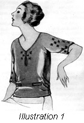
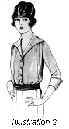

1926—The New-Way Course in Fashionable Clothes-Making
Lesson 31—Blouses
Blouses (Illustration 31-1)
Who doesn't love blouses—crisp little things of batiste, frilly little affairs of voile or crepe, severely dignified little blouses of linen or pongee? One can never have too many blouses, you know! They are quite indispensable with one's smart new suit, and entirely essential with one's pretty new sport skirt. As for dress wear, a clever combination of blouse and skirt can accomplish wonders!
This lesson will be devoted principally to a study of lingerie blouses which are at present enjoying a vogue which bids fair to remain for some time. Everyone is wearing lingerie blouses—not only because they look pretty but because they launder well and wear so nicely.
The materials used most frequently for lingerie blouses are voile, batiste, crepes (including cotton and silk georgette crepe), linen, pongee, and some of the very thin silks. Trimmings are wide and varied; one may select from such interesting items as filet lace, valenciennes lace, hand embroidery, tucks arranged in unusual groups, dainty plaited ruffles, bindings. Here again you will find your machine attachments valuable.
A Voile Blouse
Let us pretend that you want a little voile blouse to wear with your new suit. How shall you trim it, you ask. What shall the style be?
The style you can very easily find by glancing through the latest pattern styles and choosing the pattern that appeals most to your taste. As for trimming, that too is a matter of following the pattern but may we offer some suggestions.
Embroidery insertions and edges are most appropriate on batiste blouses. When combined with tucks a most pleasing effect is obtained. Or if you wish, you may make ruffles with the ruffler attachment and trim the collar and cuffs simply with these ruffles. This makes a smart, neat blouse with a tailored finish. Then, too, you may use narrow lace edging to finish the blouse, omitting everything else except, perhaps, a lace medallion in each corner of the collar.
These trimming suggestions are also extended to dimity blouses. Dimity, you will find, makes very pretty blouses. But a dimity blouse should be very much simpler and plainer than a blouse of batiste or voile. The wisest choice is a ruffled edge made of the dimity itself, with tiny tucks to trim the body of the waist.
Other Blouses (Illustration 31-2)
The newest georgette crepe blouses are made up in two colors. Here is an opportunity for you to test your knowledge of color harmony, to test your individual color taste. Have one color beneath and the other color over it, the first color forming the sleeves and shoulders, and used to bind all edges. Some very striking effects can be obtained in this way.
Crepe-de-chine, because it is so soft and serviceable, is an attractive waist material. For the tailored suit, there is nothing quite as appropriate and pretty as a tailored waist of soft crepe-de-chine. In the lighter shades it launders beautifully, and the darker shades may be sent to the cleaner to be made like new again. Blouses of this material may be tucked, embroidered or beaded. Tucking is ideal for the tailored blouse, with plaited ruffles edging the collar and cuffs. If white or flesh colored crepe-de-chine is used, one may use filet lace, Irish crochet lace or Valenciennes lace for trimming.
To Change the Collar
You may, at some time buy a waist pattern which has a collar you do not like. It is not necessary for you to use the collar if you do not like it, or to change the entire pattern for another because of the collar. You can change the collar in any way you please in accordance with the following steps.
- Place the waist on the padded dress form (padded to fit you exactly) and cut a new collar.
- Pin your waist up in the front just as it will come when you are wearing it and see that the shoulders and back fit perfectly smooth on the form.
- Now take a piece of paper and make a straight line of this paper come exactly at the center of the back of the waist and extend as far below the neckline as you want the collar to extend in the back.
- Cut a curve in the top of this paper so that it can be fitted easily around the neckline to the front. It should lay perfectly flat against the waist.
- When this is completed, cut the paper exactly even with the material at the neckline of the waist and straight with the center line at the front of the waist.
- You now have the foundation for your new collar. The lower edge may be cut in any shape you wish. New collars for waists or dresses may always be made in this manner.
Always remember that your sewing machine attachments save you a great deal of time and work. This is especially true in the making of blouses. You will want to have fine, tailored tucks for trimming, you will want neat ruffles, you will want smart bound edges and bound buttonholes. Practice on cheap material, making tucks and plaits so that you may be a complete master, using your sewing machine attachments and be able to make the kind of blouses that you will be proud to wear and your neighbors and friends will be eager to buy from you.